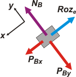

NO ME SALEN
PROBLEMAS RESUELTOS DE FÍSICA DEL CBC
(Leyes de Newton, cuerpos vinculados, plano inclinado, rozamiento)
|
|

|
2.12- Un bloque, cuya masa es 15 kg, está y
permanece en reposo apoyado en un plano inclinado
37°, con rozamiento. Al atarle un carrito de
5 kg, para el que puede despreciarse el rozamiento,
como se muestra en la figura, ambos
descienden con una aceleración de 2 m/s². A partir
del diagrama y las ecuaciones correspondientes,
hallar:
|
|
a- La intensidad de la fuerza de rozamiento entre
el bloque y el plano, antes de atar el carrito.
b- La fuerza que soporta la cuerda en el descenso.
c- Los coeficientes de rozamiento entre el bloque
y el plano, si es posible. |
 |
|
|
Este ejercicio es bastante clásico y sin demasiados detalles interesantes. Voy a aprovecharlo para destacar trivialidades. Fijate el jaspeadito que hay debajo del bloque: en las costumbres de los físicos, es una indicación de que hay ahí un rozamiento que tenés que tener en cuenta. Las rueditas del carrito... es lo contrario. La redacción del enunciado, aunque no es cien por ciento clara, indica que el bloque está primero quieto y después, al atarle el carrito, deslizando. De manera que el rozamiento entre el bloque y el plano es de tipo estático antes de atarlo y dinámico luego.
Voy a resolver primero la segunda parte, cuando el carrito ya está atado y deslizando. Hago los DCL y los comentamos. |
|
 |
Los subíndices B y C corresponden a bloque y carrito, obvio. Acá en el DCL parecen innecesarios... pero cuando esos símbolos entran en la licuadora algebraica... son indispensables.
Estos DCLs son fundamentales si tu objetivo es entender la dinámica del sistema. Te muestra las interacciones de cada uno de los cuerpos. Ahora, para resolver el ejercicio necesitamos que los DCLs sean operativos, es decir, que las fuerzas que muestran apunten en direcciones ortogonales e independientes -x e y- que permitan operar algebraicamente. Elegimos un SR y descomponemos algunas fuerzas. |
|
|
 |
Cualquier SR hubiera servido... pero éste, cuya dirección x coincide con la dirección y sentido de la aceleración, y que coincide en direcciones con cinco de las siete fuerzas que teníamos... va a ser el más sencillo y económico.
Descomponemos las dos fuerzas que no coinciden con las direcciones x e y, y de ahí nos vamos a las ecuaciones. No te olvides que para cada cuerpo
Px = m . g . sen 37°
Py = m . g . cos 37°
(Si no te acordás de dónde sale eso, podés verlo acá). |
|
|
Bueno basta de cháchara, vamos a resolver el ejercicio. Este es el set de ecuaciones de Newton.
bloque, eje x → T + PBx — Rozd = mB . a [1]
bloque, eje y → NB — PBy = 0 [2]
carrito, eje x → PCx — T = mC . a [3]
carrito, eje y → NC — PCy = 0 [4]
Y además agregamos una ecuación que describe la naturaleza del rozamiento
rozamiento bloque → Rozd = μd . NB [5]
Si tenés ganas de contar, vas a ver que hay más ecuaciones que incógnitas. O sea... el ejercicio ya está recontracocinado. El resto es álgebra, para obtener los resultados numéricos. Si te parece hacemos así: Sumemos la [1] y la [3]
T + PBx — Rozd + PCx — T = mB . a + mC . a
Rozd = PBx + PCx — mB . a — mC . a
Si querés podés hacer las cuentas ahora... pero dejame hacer un pasito más, ¿dale?
Rozd = (g sen 37° — a) (mB + mC)
Rozd = (10 m/s² 0,6 — 2 m/s²) 20 kg
Rozd = 80 N
De la ecuación [3] sale en forma directa el valor de la tensión.
T = PCx — mC . a
T = 30 N — 5 kg . 2 m/s²
|
redondeemos:
sen 37° = 0,6
cos 37° = 0,8
|
|
|
El coeficiente de rozamiento surge de la ecuación [5], teniendo en cuenta la respuesta a) y la ecuación [2]
μd = Rozd / NB
μd = Rozd / mB . g . cos 37°
μd = 80 N / 15 kg . 10 m/s² 0,8
|
|
|
|
| Ahora viene la parte más interesante del ejercicio. Fijate que la pregunta c) pedía por los coeficientes de rozamiento. Como el cuerpo deslizaba pudimos hallar el dinámico, ahí está. ¿Pero el estático? Es sutil, pero importante. Como el cuerpo comienza a deslizar cuando se le engancha el carrito, hay que suponer que sin el enganche, el bloque se hallaba quieto en equilibrio. |
|
|  |
De modo que lo que lo sostenía era una fuerza de rozamiento estática. Su valor debe ser igual a la componente x de su peso.
Roze = mB . g . sen 37°
|
|
Ojo, no necesariamente es la fuerza de rozamiento estática máxima, de modo que no se puede conocer el valor de μe. Pero, si ese fuera el caso, entonces el valor del coeficiente debería ser, por lo menos,
μe > 0,75
|
|
|
| |
|
| |
| Si no te das cuenta cómo hice este razonamiento te tiro un centro: fijate qué pasaría con un valor un poquito menor -digamos 0,72-, y otro un poco mayor -por ejemplo: 0,78-. Fijate, hacé cálculos. Ya te va a caer la ficha. |
|
 |
| DESAFIO: ¿Cuánto debería valer la masa del carrito para que, si el conjunto desliza hacia abajo, lo haga a velocidad constante? |
|
| Agradezco a Mariana Etchebest, estudiante de la UTN, por su lectura atenta y el envío de una corrección importante. Algunos derechos reservados.
Se permite su reproducción citando la fuente. Última actualización jul-07. Buenos Aires, Argentina. |
|
|
|